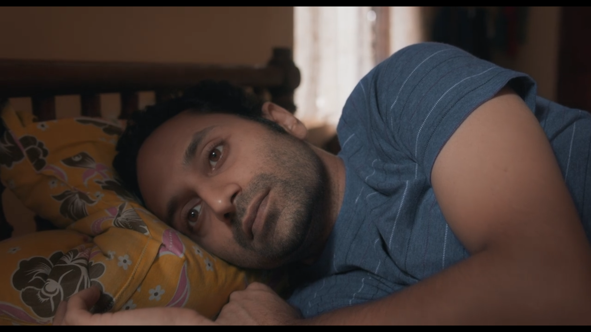
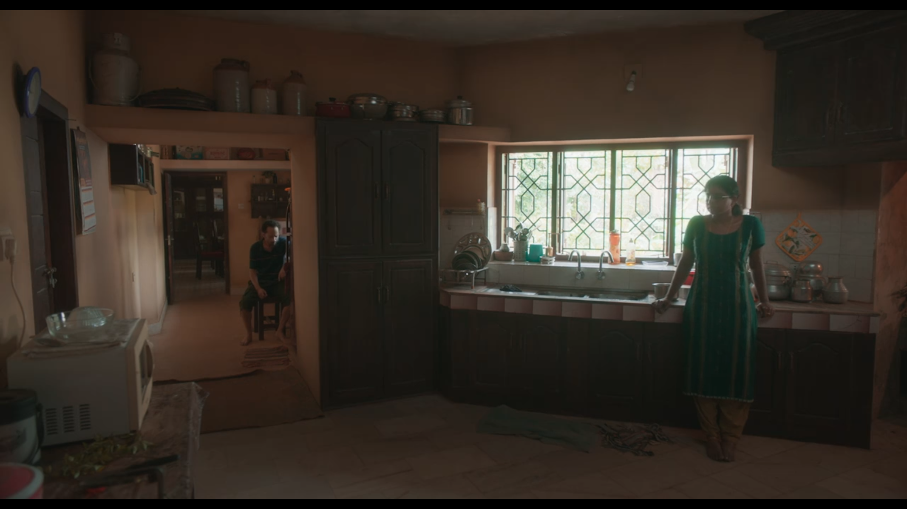
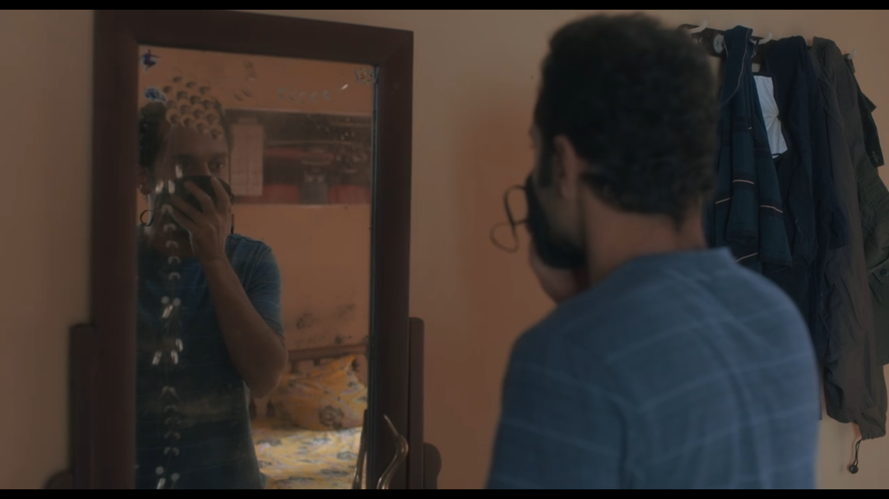
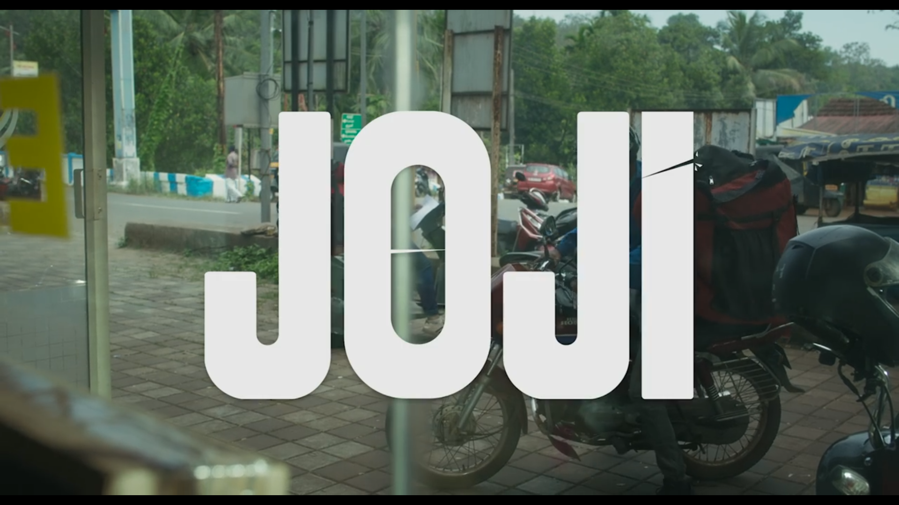
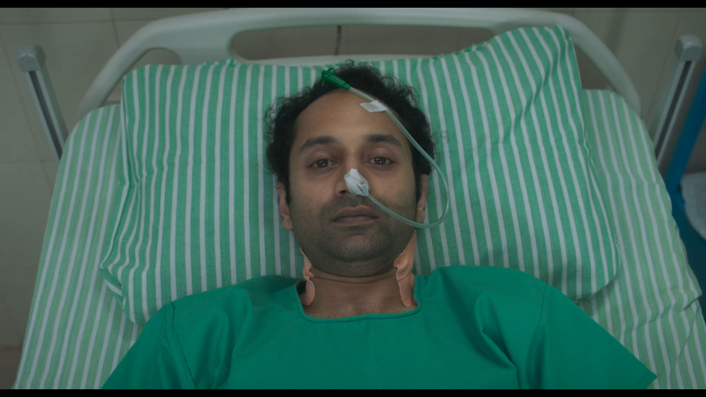

Joji is a Malayalam film directed by Dileesh Pothan and written by Syam Pushkaran, starring Fahad Fasil, Babu Raj, Unni Maya, and Joji Mundakayam.
The film focuses on Joji, who has no responsibilities and wants to live his life as such. Unusual events occur within the family as a result of the greediness of the family members, changing everyone's life.
Joji is actually an adaptation of Shakespeare's tragic drama "Macbeth," but both are too far out.
The stories are similar here, but the treatment is completely different from that of "Macbeth". Almost all of the characters from "Macbeth" appear here, but their contributions to this film are vastly different.
Syam Pushkaran knows exactly what he wants and how to get it. If you are a regular viewer of his works such as "Thondimuthalum Driksakshiyum" , "Maheshinde Prathikaram", and "Kumbalangi Nights" , you will notice how he portrays the nature of each character as well as how he uses the surroundings. "Joji" is very different from the rest of his films. It has a dark personality when it comes to performances, music, and so on.
We could easily distinguish between his older works and Joji. As I previously stated, it is a completely different treatment as well as an experience. Joji has a kind of disturbance. Disturbance in terms of the protagonist's characterisation.
Dileesh isn't on the same path as him. His previous two films were diametrically opposed to this one. Even "Thondimuthalm Driksakshiym" was a far cry from his first film. But the one thing that these three films had in common that I liked was the way he depicted the beauty of the setting. It was too obvious in "Mahashinde Prathikaram". He has the ability to make better films in a small space. According to Dileesh Pothan, cinema is a visual medium in which every single element in the film should be beautiful in its own right. That was evident in three of his films.
He was particularly memorable for his portrayals of Idduki in "Maheshinde Prathikaram" , Prasad a thief stealing a gold chain in "Thondimuthalm Dhriksakshiym" , and many other scenes in Joji.
Shyju Khalid's cinematography could define the geography of their location, and also many of the shots in the film have a similar feel to those in "Salt and Pepper" and "Kumbalangi Nights" . Both are his own creations. One of my favourite shots in the film "Joji" is a tracking shot in which the camera moves towards Joji while he is lying on a bed in his room during his father's death ceremony. 
Justin Varghees composed the music. He played a pivotal role in transforming "Joji" into an artistic work. Because of his music, the movie had a drama-like feel to it, and his music defines the evilness of the character Joji as well as certain other emotions such as helplessness, fear, and so on.
When compared to his previous works such as "Njandugalude Naatil oru Idavela", "Thaneermathan Dhinangal" , and so on, Joji was completely different.
Kiran Das is the editor. The editing and transitions in the film were both smooth. Throughout the film, there was no sense of uneasiness.
One of my favourite scenes are when Bincy says, "Throughout your life, all you have to do is sit in this seat and eat." That was an important scene in which Bincy took on the role of Lady Macbeth. Joji simply smiles and returns to his position after that conversation. Following that, there will be a wide angle shot of both Bincy and Joji, defining each of their states. 
Joji is a character who appears to be a young boy. Who wears shorts and t-shirts, who is lazy, who has a trimmed beard and moustache, and so on. Within PK Kuttapan's family, there is a power heirarchy. Poppy to PK Kuttapan. Joji's reaction in the shadow of his father and brothers implies that Joji can only control and resist Poppy.
Joji was not avaricious. Greed was only one of the factors that set him off. His father was constantly insulting him. That compelled him to act in certain ways.
Joji's character has an arc that begins without any kind of introduction throughout the film. In fact, no character in this film was given a specific introduction. But what distinguishes Joji's character is that his behaviour changes on a regular basis. To protect himself, he had to perform in a variety of ways. To support this, there is a scene in the film where Bincy says, "Joji, put on a mask and come." After that, he examines his own face in the mirror while wearing a mask.

The characters themselves are what distinguishes Macbeth and Joji. Following the assassination of King Duncan, the protagonist Macbeth's life was completely disrupted. But Joji was completely intense here, and he refuses to accept that he made mistakes. Which was validated by the climax. But, to some extent, Joji is conflicted, as evidenced by scenes in which he dreams of his father. The pond's net will be fired. So these were happening inside Joji's head.
The film's music is one of its most notable assets. It just gives you the impression that you're watching a drama. Because there was no lengthy music or background music. Those were only there to convey that specific scene.
Every character's performance was brilliant. The film begins with a person collecting a courier from a store and starting his bike to deliver it. Simultaneously, the title card "Joji" will be shown.  Which indicates that there is a significant connection between this courier and Joji. This reminded me of Sibi Malayil's 1998 movie "Summer in Bethlehem" film.
Another important aspect that I think adds a lot is the story. Because it was well written, and Joji was the protagonist. In most movies, the protagonist will have a character arc in which he will be something in the beginning but will become a good guy or something along those lines by the end. But, even at the climax, Joji's character maintained the same mindset. 
After watching this film, I had a surreal feeling. It could be because of the music. However, I felt that the majority of the scenes were shot in PK Kuttapan's house. And it was clear from the beginning of the pre-credit scene that their house was isolated. And the majority of the relevant scenes, particularly Joji's, took place inside their home. So it felt like I was watching a drama. It was a unique experience for me, as well as from their combination too.